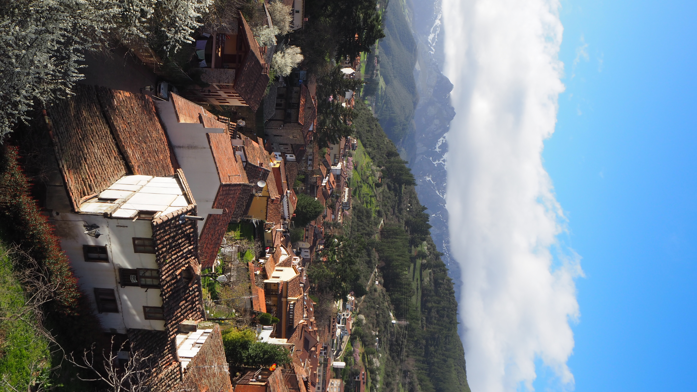
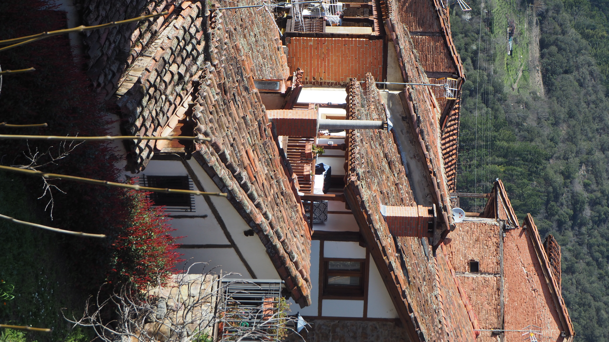

This weekend we explored the Desfiladero de la Hermida, near the charming town of Potes. The gorge is impressive, a winding road between mountains, with nearly vertical walls and the river below. From the first moment, you realize you are in a special place: wild nature, silence, and breathtaking landscapes.

Potes itself is a very picturesque town, with stone houses, old bridges, and a calm atmosphere among the mountains. Perfect for walking and disconnecting.
First, we visited Potes. We strolled slowly through the streets, took some photos (impossible not to) and enjoyed the atmosphere.

In the afternoon, we went to the Balneario de la Hermida. The place is beautiful, but what really makes it special is the absolute pleasure of the hot water pools, with incredible views outside. Immersed in warm water surrounded by mountains, you are left speechless. Moments like this make you think: “This is what life is all about!”
In the evening, we had dinner at La Juana restaurant. We ate a large cachopo accompanied by the local croquettes. After a day like that, a hearty dinner fits perfectly. Delicious!
A bit of adventure: we did the Via Ferrata de Camaleño. An unforgettable experience. We even crossed a K3-level bridge, which is tense for a moment… but at the same time gives immense satisfaction. The views from above are absolutely worth it.
A simple weekend, but with a perfect plan: nature, tranquility, a little adventure, and good food. What more could you ask for?